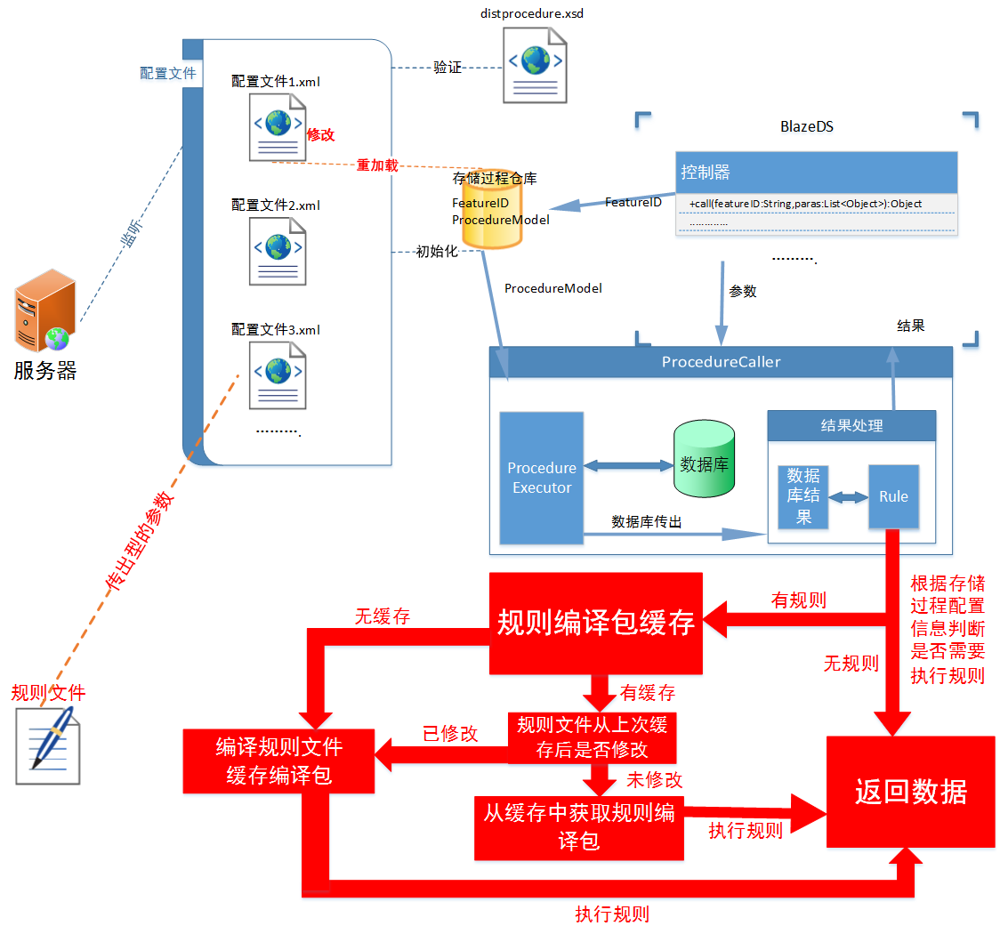

DistProcedure
相关帮助请参考:《DistProcedure 文档》
DistProcedure 能简化存储过程的调用和结果的映射，只需要通过简单的配置就可以满足各种要求，基本不用编写任何代码，它有如下特性：
- 热部署；存储过程修改后，后台不用重启即可完成存储过程的动态更新。
- 结果自动映射；对于简单的数据，比如一个数字，不需要任何的映射，而对于多字段的一条记录，可以自动映射成配置的model类。
- 接口支持；存储过程调用后，传递出来的数据不会经过任何的业务处理，通过相应的接口可以满足数据的二次业务处理。
- 规则引擎；通过接口可以满足数据的二次业务处理，这种情况下需要编码，需要重启服务器，而通过编写一个规则文件来处理数据，不需要编写任何的代码，而且也不用重启就可完成数据的二次业务处理。
- 规则缓存；不会重复编译规则文件。 ......
下面是一张流程图：

更多信息参考:《DistProcedure 文档》。